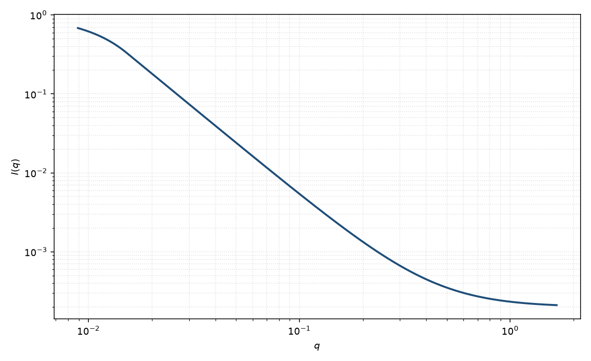

质量分形
mass fractal
适用场景
质量随半径按 $M\sim R^{D_m}$ 增长的聚集体，中间区 $I\sim q^{-D_m}$。$D_m$ 在 $1$–$3$ 之间：近线形网络偏低，密实团簇接近 $3$。
需要建造块振荡或指数截断的完整 Teixeira 式时，用分形页。高 $q$ 若转到表面尾，用质量–表面分形。
物理图像
质量分形的成对距离分布在标度区 $\sim r^{D_m-3}$，Fourier 得 $q^{-D_m}$。低 $q$ 被整体 $R_g$ 截断，高 $q$ 被一次颗粒表面截断。
Sinha 与 Teixeira 给出了把 $D_m$ 嵌进 $S(q)$ 的标准写法。取向平均已包含在各向同性公式里。
示意图

核心公式
出发点
质量随半径 $M\sim R^{D_m}$ 增长，等价于成对距离分布在标度区 $\sim r^{D_m-3}$。三维 Fourier 变换把实空间指数 $D_m-3$ 变成 $q^{-D_m}$。本页写中间区加 Guinier 截断；完整截断与建造块见 Teixeira 分形页。
推导
$\gamma(r)\propto r^{D_m-3}$（$r_0\ll r\ll\xi$）。由 $\mathrm{FT}[r^{\alpha}]\propto q^{-\alpha-3}$、$\alpha=D_m-3$，得
$$I(q)\sim q^{-D_m},\qquad 1\le D_m<3.$$低 $q$ 有限尺寸把相关截断，回到二阶矩 Guinier。把两段包络相加（示意，未做 $\mathrm{erf}$ 或 Teixeira 闭合）
$$I(q)\simeq G\exp(-q^2 R_g^2/3)+B_{\mathrm{f}}\,q^{-D_m}+B.$$整体 $R_g$ 与截断 $\xi$ 同量级。严格写法应回到 $I\propto P(q)S(q)$，其中 $S$ 为 Teixeira、$D=D_m$。
低 $q$ 与渐近
低 $q$：Guinier 坪，$R_g$ 是聚集体尺寸。中间：$q^{-D_m}$。高 $q$ 被一次颗粒表面截断：光滑面 $q^{-4}$，粗糙面 $q^{D_s-6}$，那是质量–表面分形的内容。把表面尾算进 $D_m$ 会得到假的 $3$–$4$ 之间的值。
参数表
| 参数 | 符号 | 含义 | 单位 | 典型范围 |
|---|---|---|---|---|
| 质量维数 | $D_m$ | 质量分形维数 | 无量纲 | $1$–$3$ |
| 回转半径 | $R_g$ | 聚集体整体尺寸 | Å | 大于建造块 |
| 幅度 | $G$, $B_{\mathrm{f}}$ | Guinier 与幂律前置 | 与强度单位一致 | 相关，需宽窗口 |
| 标度 / 本底 | $\mathrm{scale}$, $B$ | 前置因子与常数本底 | 与强度单位一致 | 实验相关 |
拟合注意
取向：拉伸网络会使表观 $D_m$ 下降。粉末数据里的 $D_m$ 是各向同性平均。
多分散聚集体使低 $q$ 变陡，表观 $D_m$ 偏大。磁性质量分形只计入带磁矩的建造块。
可辨识性：把表面尾算进 $D_m$ 会得到假的 $3$–$4$ 之间的值。先看是否存在第二段更陡的斜率。
相近模型
参考文献
- Teixeira, J. Small-angle scattering by fractal systems. J. Appl. Cryst. 1988, 21, 781–785. DOI: 10.1107/S0021889888001990
- Sinha, S. K.; Freltoft, T.; Kjems, J. In Kinetics of Aggregation and Gelation; Elsevier: Amsterdam, 1984.